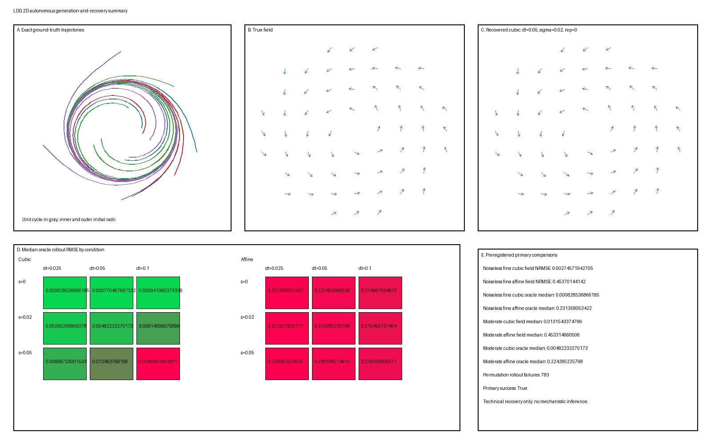

Two-Dimensional Autonomous Dynamics: Generation and Recovery
Two-Dimensional Autonomous Dynamics: Generation and Recovery
This L1 object records both the reviewed implementation contract and its bounded executable realization. Its stable status records owner-authorized acceptance after independent technical and implementation/result review. The generated results test the declared simulator and recovery pipeline; stable status does not validate a real system or turn recovery performance into mechanistic evidence.
Assumed background: elementary multivariable calculus and polar coordinates; basic probability and linear algebra; polynomial regression and ridge-regression basics; finite differences and smoothing; and elementary numerical integration. These external basics are not repository prerequisites.
Question
Can a transparent cubic polynomial estimator recover a known nonlinear two-dimensional autonomous vector field and its held-out trajectories from directly observed, finitely sampled, noisy state coordinates, and when does it improve over a linear baseline?
The demonstration is deliberately narrow. It asks whether a method recovers one declared simulator under controlled sampling and noise, not whether an autonomous model is appropriate for a real system.
Ground truth
Let \(z(t)=(x(t),y(t))\in\mathbb R^2\) and define
\[ \dot x=(\alpha-\beta r^2)x-\omega y, \]
\[ \dot y=\omega x+(\alpha-\beta r^2)y, \]
where \(r^2=x^2+y^2\), with fixed parameters
\[ \alpha=1, \qquad \beta=1, \qquad \omega=2. \]
In polar coordinates this field has
\[ \dot r=r(1-r^2), \qquad \dot\theta=2. \]
For \(r_0>0\), an analytic reference solution is
\[ r(t)=\left[1+(r_0^{-2}-1)e^{-2t}\right]^{-1/2}, \qquad \theta(t)=\theta_0+2t. \]
Thus the origin is a fixed point, every nonzero initial condition rotates counterclockwise, and radii below or above one approach the isolated periodic orbit \(r=1\). These properties follow from the declared equations and serve as simulator checks; they are not inferred from generated plots.
The state space is \(\mathbb R^2\). Primary training and evaluation are restricted to trajectories initialized with \(0.35\le r_0\le1.65\). Field error is evaluated on the declared annulus
\[ \mathcal D_{\mathrm{eval}}=\{(x,y):0.35\le\sqrt{x^2+y^2}\le1.65\}, \]
so conclusions do not extend automatically to the origin or to arbitrary radii.
Generative model
Generation and observation are separate steps.
Draw an initial state \(z_0=(r_0\cos\theta_0,r_0\sin\theta_0)\) from the distributions below.
Solve the deterministic initial-value problem \(\dot z=f(z)\) from \(t=0\) to \(t=8\).
Evaluate the same continuous latent solution at the requested observation interval \(\Delta t\).
Generate direct observations
\[ y_k=z(t_k)+\varepsilon_k, \qquad \varepsilon_k\overset{\mathrm{iid}}\sim\mathcal N(0,\sigma^2I_2). \]
The identity observation map fixes the latent coordinate convention. Sampling interval and observation noise are manipulations of the measurement process; they do not alter \(f\), its parameters, or the latent initial-condition law.
Parameters
| Component | Fixed plan |
|---|---|
| Ground-truth field | \(f(x,y)=((1-r^2)x-2y,\;2x+(1-r^2)y)\) |
| Integration interval | \(t\in[0,8]\) |
| Primary initial radii | exact half-split: \(U[0.35,0.75]\) and \(U[1.25,1.65]\) |
| Initial angles | \(U[0,2\pi)\) independently of radius |
| Training / test trajectories | 64 / 40 independent initial conditions |
| Sampling intervals | \(\Delta t\in\{0.025,0.05,0.10\}\) |
| Observation-noise scales | \(\sigma\in\{0,0.02,0.05\}\) in state-coordinate units |
| Noise replicates | 10 per nonzero-noise condition; one deterministic replicate when \(\sigma=0\) |
| Primary recovery basis | all monomials in \((x,y)\) of total degree at most three |
| Baseline basis | constant plus degree-one terms only |
| Ridge penalty | \(\lambda=10^{-4}\) after standardizing nonconstant feature columns on training data |
| Smoothing windows | 21, 11, and 5 points for \(\Delta t=0.025,0.05,0.10\), respectively; cubic Savitzky–Golay polynomial |
| Evaluation grid | \(\rho_i=0.35+i(1.30/26)\), \(i=0,\ldots,26\); \(\theta_j=2\pi j/64\), \(j=0,\ldots,63\) |
The training split contains exactly 32 initial radii from each interval; the primary test split contains exactly 20 from each. Angles are sampled independently. This exact stratification forces both splits to include trajectories approaching the cycle from both sides. Test initial conditions use independent seeds and are held out as entire trajectories.
For each sampling interval,
\[ t_k=k\Delta t, \qquad k=0,\ldots,8/\Delta t, \]
including both endpoints. The three conditions therefore contain 321, 161, and 81 observation times, respectively. The angular grid excludes the duplicated endpoint \(2\pi\); both radial endpoints are included.
Simulation
The reviewed plan specified SciPy DOP853 for numerical generation. SciPy was not available in the existing approved runtime, and no dependency was installed. The executable therefore uses the exact analytic polar solution as the primary generator and checks it independently with a NumPy fixed-step fourth-order Runge–Kutta integrator using \(h=0.005\). This is an explicit implementation realization, not a silent change to the ground-truth field, time support, sampling conditions, or evaluation contract.
The implementation generates latent trajectories once per initial condition and derives every sampling condition from the same continuous solution. Independent paired standard-normal draws are added only after sampling and scaled by the declared \(\sigma\). Train and test arrays remain separate; no held-out time point enters feature scaling or regression fitting. The smoothing duration and every recovery hyperparameter remain fixed rather than selected on test results.
The executable source is two-dimensional-autonomous-dynamics.py. It implements the centered local-cubic filters with NumPy pseudoinverses, the declared ridge objective with NumPy linear algebra, recovered rollouts with RK4, and a composite PNG with the already available Pillow library.
Visualization
The bounded composite diagnostic produces:
- true phase portraits with inner and outer trajectories and the unit cycle;
- true and recovered vector-field arrows on the same fixed evaluation grid, shown in separate panels rather than visually subtracting one from the other;
- metric heat maps over \((\Delta t,\sigma)\) for cubic and affine oracle-rollout error; and
- the preregistered primary comparisons plus the explicit derivative-permutation failure count.
Held-out trajectory-level errors, fitted coefficients, and all failure flags/horizons remain in metrics.csv, coefficients.csv, and diagnostics.json rather than being compressed into the single bounded PNG.
Visualizations are diagnostics only. Numerical evaluation and negative controls determine whether recovery succeeded.

Expected behavior
The following expectations are falsifiable design predictions, not generated results.
- In the noiseless, finest-sampling condition, cubic recovery should approximate the true polynomial field and outperform the misspecified linear baseline on field and rollout error.
- Increasing \(\sigma\) or \(\Delta t\) should worsen derivative estimation and downstream field recovery, although the trend need not be strictly monotone in every finite replicate.
- The linear baseline may approximate short local segments but should miss radius-dependent contraction and expansion across the full annulus.
- The derivative-permutation negative control should lose state-to-velocity structure and perform substantially worse than the unshuffled cubic fit.
- Long rollouts should amplify small field-estimation errors, so one-step error may remain low after trajectory error has become appreciable.
These expectations will not be enforced by retuning the simulator or estimator after results are seen. A violation is a result to diagnose.
Parameter manipulations
The primary bounded factorial design contains nine sampling/noise conditions:
\[ \Delta t\in\{0.025,0.05,0.10\} \quad\times\quad \sigma\in\{0,0.02,0.05\}. \]
Only the observation schedule and observation noise change. The latent field, integration interval, initial-condition distribution, data split sizes, smoother duration, feature basis, and ridge penalty remain fixed.
One labeled extrapolation stress test uses 16 additional held-out initial radii drawn from \(U[1.65,1.90]\) with independent angles at \((\Delta t,\sigma)=(0.05,0.02)\). It is reported separately and is not part of the primary success criterion because it begins outside the field-evaluation annulus.
Sanity checks
Before interpreting recovery, the executable unit must pass these generator and data checks:
- Polar identity: numerical \(\dot r\) and \(\dot\theta\) computed from the analytic field match \(r(1-r^2)\) and \(2\) away from the origin.
- Radial direction: on the finest latent grid, \(r_{k+1}-r_k\ge-10^{-10}\) for \(r_0<1\) and \(r_{k+1}-r_k\le10^{-10}\) for \(r_0>1\).
- Cycle check: a trajectory initialized at \(r_0=1\) remains within \(10^{-8}\) of unit radius over \([0,8]\) under the tighter-solver diagnostic.
- Period check: from \(z_0=(1,0)\), integrate with RK4 step \(h=0.001\), detect the first negative-to-nonnegative crossing of \(y(t)\) after \(t=0.1\), linearly interpolate within that step, and require agreement with \(\pi\) to relative error below \(10^{-6}\).
- Split check: train, primary test, and extrapolation initial-condition records and seeds are disjoint and have the declared exact stratum counts.
- Noise check: empirical noise means and covariance over all generated observations are reported for each \(\sigma\); this is a diagnostic, not a requirement that every finite sample equal its population moment.
- Leakage check: feature scaling and regression use training trajectories only.
- Determinism check: two executions with the same manifest produce byte-identical tabular metrics and numerically identical arrays.
Failure cases
The implementation must report, not hide, at least these failures:
- The cubic estimator fails to beat the linear baseline in the noiseless, finest-sampling condition. This indicates an implementation, derivative-estimation, or evaluation defect before it supports a scientific conclusion.
- Coarse sampling and observation noise produce biased derivative targets, unstable coefficients, or divergent rollouts. The condition \((\Delta t,\sigma)=(0.10,0.05)\) is an explicit stress condition and may fail.
- The derivative-permutation negative control matches the unshuffled estimator. This suggests leakage, an insensitive metric, or a recovery task that does not use state–velocity correspondence.
- Rollouts leave a radius of 3 or the numerical solver fails. Such runs are counted as failures and assigned infinite rollout error for ranking; their finite pre-failure horizon is also recorded.
- A smoother erases the radial transient or creates apparently smooth rotation not supported by raw observations. Smoothed state error and field error must therefore be reported separately.
- Good observation reconstruction coincides with poor field recovery. This is not resolved by selecting the visually better trajectory.
Recovery task
Recovery is performed without supplying the analytic form or coefficients of \(f\) to the estimator.
Smooth each observed coordinate independently with centered local-cubic least squares. NumPy computes the state and first-derivative filter coefficients by pseudoinverting the cubic design matrix on windows of 21, 11, and 5 points for \(\Delta t=0.025,0.05,0.10\). Only the common interior interval \(0.30\le t_k\le7.70\) is retained; no padded edge output is fitted or scored.
Construct features in the exact raw order
\[ \phi(z)=[1,x,y,x^2,xy,y^2,x^3,x^2y,xy^2,y^3]. \]
Retain only smoothed training samples with \(0.30\le t\le2.0\) for vector-field fitting, preventing the long near-cycle tail from dominating the radial transients. If there are \(n\) retained rows, set \(\mu_j=n^{-1}\sum_i\phi_{ij}\) and \(s_j=[n^{-1}\sum_i(\phi_{ij}-\mu_j)^2]^{1/2}\) for \(j=1,\ldots,9\); a zero \(s_j\) is a failed run. Define \(X_{i0}=1\) and \(X_{ij}=(\phi_{ij}-\mu_j)/s_j\). Thus scaling uses population standard deviation (
ddof=0) on training rows only.For each velocity component \(v\), solve the deterministic ridge problem
\[ \hat b =\arg\min_b \left\{n^{-1}\|Xb-v\|_2^2+\lambda b^TPb\right\}, \qquad P=\operatorname{diag}(0,1,\ldots,1), \quad \lambda=10^{-4}, \]
using a linear solve, not an explicit matrix inverse. Convert to raw coefficients by \(c_j=b_j/s_j\) for \(j\ge1\) and \(c_0=b_0-\sum_{j=1}^9b_j\mu_j/s_j\).
Integrate the recovered autonomous field for each held-out trajectory from the common grid-aligned start \(t=0.30\) through \(t=8\).
Produce two rollout variants: oracle-initialized, starting at the known held-out \(z(0.30)\) to isolate field recovery, and observation-initialized, starting at the smoothed estimate \(\hat z(0.30)\) to measure end-to-end degradation.
The recovered object is a vector-field estimate in the declared observation/latent coordinates. One fitted trajectory is not treated as the recovered field.
Candidate analysis methods
Only three bounded analyses are planned:
- Primary: cubic polynomial ridge regression on smoothed derivative estimates.
- Simpler baseline: linear ridge regression using the same smoothed states, derivative targets, penalty, feature scaling rule, and rollout procedure.
- Negative control: for each acquisition condition and noise replicate, pool the retained training rows, draw one permutation of row indices, and apply it jointly to the paired two-component derivative vectors while leaving states/features fixed. The scaler, ridge objective, solver, and evaluation are otherwise unchanged. This is a derivative-permutation control, not a permutation of observation times within each trajectory.
No neural network, manifold learner, sparse-regression library, or broad hyperparameter search is included. The fixed cubic basis contains the true field but the estimator is not told which coefficients are nonzero; this makes the example a recovery and noise-sensitivity demonstration, not a model-class-discovery benchmark.
Evaluation
All primary metrics use held-out trajectories or the fixed evaluation grid in the same declared coordinates as the generator. Let \(\mathcal T_{\mathrm{state}}\) be the condition-specific observation times in \([0.30,7.70]\), and let the common rollout grid be
\[ \mathcal T_{\mathrm{roll}}=\{0.30+0.10m:m=0,\ldots,77\}. \]
Smoothed-state RMSE: for one trajectory,
\[ \operatorname{RMSE}_{z} =\left[|\mathcal T_{\mathrm{state}}|^{-1} \sum_{t\in\mathcal T_{\mathrm{state}}} \|\hat z(t)-z(t)\|_2^2\right]^{1/2}. \]
Vector-field normalized RMSE:
\[ \operatorname{NRMSE}_f = \sqrt{ \frac{\sum_{z\in\mathcal G}\|\hat f(z)-f(z)\|_2^2} {\sum_{z\in\mathcal G}\|f(z)\|_2^2} }, \]
on the fixed grid \(\mathcal G\subset\mathcal D_{\mathrm{eval}}\).
One-step state RMSE: for one trajectory, integrate \(\hat f\) for that condition’s \(\Delta t\) from each true state at retained \(t_k\) with \(t_{k+1}\le7.70\), then take the root mean of squared Euclidean next-state errors.
Rollout trajectory RMSE: use the same formula as \(\operatorname{RMSE}_z\) on \(\mathcal T_{\mathrm{roll}}\) for oracle- and observation-initialized rollouts beginning at \(t=0.30\).
Radial error: on \(\mathcal T_{\mathrm{roll}}\), take the root mean of \([\hat r(t)-r(t)]^2\), reported separately because phase and radius errors have different interpretations for this oscillator.
Coefficient error: if \(C\) and \(\hat C\) are the two-output raw coefficient matrices in the declared feature order, report \(\|\hat C-C\|_F/\|C\|_F\). This metric is valid here only because the generator and estimator share declared coordinates and basis.
Failure rate: fraction of held-out rollouts that cross radius 3, terminate early, or produce nonfinite values.
For each noise replicate, trajectory-level state, one-step, rollout, and radial errors are summarized by their median and interquartile range across the 40 primary test trajectories; failure rate is the fraction of those trajectories. Vector-field and coefficient errors yield one value per fitted model. A nonzero-noise condition is then summarized by the median and interquartile range of its ten replicate-level summaries. The noiseless condition reports its single fitted-model value and its trajectory median/interquartile range. Raw trajectory and replicate values remain available.
The preregistered primary success check is limited to the noiseless fine condition and the moderate condition \((\Delta t,\sigma)=(0.05,0.02)\). In the noiseless condition, the single cubic fit must have lower vector-field NRMSE and lower median-across-trajectories oracle-rollout RMSE than the linear baseline. In the moderate condition, the cubic estimator must have lower median-across-replicates vector-field NRMSE and oracle-rollout RMSE than the linear baseline. In both conditions, the derivative-permutation control must not outperform the unpermuted cubic estimator. The plan does not require every noisy or extrapolation condition to succeed. Exact metric values and all negative results must be reported; no threshold is retrofitted after inspection.
Observed bounded results
These values are outputs of the deterministic simulator and fixed recovery pipeline under master seed 20260818. They are empirical results relative to this implementation, not established properties of other systems.
The preregistered comparisons passed:
| Condition | Model | Field NRMSE | Median oracle-rollout RMSE |
|---|---|---|---|
| \(\Delta t=0.025\), \(\sigma=0\) | Cubic | 0.00275 | 0.000829 |
| \(\Delta t=0.025\), \(\sigma=0\) | Affine | 0.45370 | 0.23136 |
| \(\Delta t=0.025\), \(\sigma=0\) | Derivative permutation | 1.05446 | 1.40472 |
| \(\Delta t=0.05\), \(\sigma=0.02\) | Cubic, median over 10 replicates | 0.01315 | 0.00482 |
| \(\Delta t=0.05\), \(\sigma=0.02\) | Affine, median over 10 replicates | 0.45331 | 0.22429 |
| \(\Delta t=0.05\), \(\sigma=0.02\) | Derivative permutation, median over 10 replicates | 1.02738 | 1.41368 |
Across the nine primary conditions, cubic median oracle-rollout RMSE increased from 0.000829 in the noiseless finest condition to 0.03406 at \((\Delta t,\sigma)=(0.10,0.05)\). The corresponding cubic field NRMSE increased from 0.00275 to 0.07477. This supports the planned qualitative sensitivity to sampling and noise without implying strict monotonicity in each replicate.
For the separate outer-radius stress test at \((0.05,0.02)\), the cubic median oracle-rollout RMSE was 0.00333, compared with 0.34546 for the affine baseline. This is simulator-specific extrapolation over the declared radius range, not general evidence of extrapolation robustness. No cubic or affine rollout crossed the failure radius; derivative-permutation rollouts failed in 783 of 2680 evaluated trajectory/model instances, which is retained as negative-control behavior rather than discarded.
The analytic-generator checks also passed: polar-identity residual \(1.33\times10^{-15}\), RK4-versus-analytic maximum Euclidean error \(1.33\times10^{-9}\), unit-cycle radial error \(1.11\times10^{-16}\), and relative period error \(9.43\times10^{-12}\).
Interpretation
In this executed run, when the state coordinates were directly observed and the true field lay in the fitted cubic function class, the transparent derivative-regression pipeline recovered the declared simulator’s local vector field and finite-time trajectories under the preregistered conditions. The comparison with the affine baseline isolated the value of the nonlinear terms within this simulator, while the stress conditions showed sensitivity to derivative estimation, sampling, and accumulated rollout error. These results remain specific to the declared generator, observation map, estimator class, and evaluation support.
A failed run under this contract would still be informative: the same metric decomposition would help diagnose whether failure began in state smoothing, derivative estimation, field fitting, or finite-time integration. This counterfactual diagnostic structure prevents one favorable visualization or reconstruction score from masking another failure.
What this toy model does NOT establish
This toy model does not establish that:
- real neural or behavioral data follow this oscillator or any autonomous ODE;
- a low-dimensional visualization is a manifold or a complete state space;
- low trajectory error identifies a unique mechanism or latent coordinate system;
- the cubic estimator discovers the correct model class when that class is unknown;
- smoothing-induced regularity is evidence of smooth true dynamics;
- direct identity observations represent realistic sensors;
- recovery inside \(\mathcal D_{\mathrm{eval}}\) implies extrapolation outside it;
- good one-step prediction guarantees accurate long-horizon flow recovery; or
- a simulated attracting cycle validates a limit-cycle interpretation in observed data.
Ground truth here is simulator-relative. It is known because it is declared, not because the same quantities would be observable in an experiment.
Extensions to real data
Any later real-data extension would first need a defensible state description, a nontrivial observation model, irregular or missing-data handling, uncertainty quantification, and held-out interventions or conditions. Model comparison should then include non-autonomous, stochastic, and simpler non-dynamical alternatives. None of those extensions is authorized by this object.
Reproducibility
The executed implementation uses:
- master seed
20260818and NumPyGenerator(PCG64(SeedSequence(words))). Initial-condition generators use words[20260818, 1, split_code]withsplit_code1=train, 2=test, 3=extrapolation. For each split and replicate \(q=0,\ldots,9\), standard-normal noise on the finest \(\Delta t=0.025\) grid uses[20260818, 2, split_code, q]; coarser schedules subsample the same noise realization, and \(\sigma=0.02\) and \(0.05\) scale the same standard-normal array. This pairs noise across sampling intervals and noise scales. Derivative-permutation controls use[20260818, 3, dt_code, sigma_code, q], wheredt_codeis 25, 50, or 100 andsigma_codeis 0, 20, or 50; - source target
toy-models/two-dimensional-autonomous-dynamics.py; - generated artifact directory
toy-models/artifacts/two-dimensional-autonomous-dynamics/; - required outputs
manifest.json,latent-trajectories.npz,observations.npz,metrics.csv,coefficients.csv, and versioned.pngfigures; - bundled Python 3.12.13, NumPy 2.3.5, and Pillow 12.3.0; SciPy and Matplotlib were unavailable and were not installed. On this machine, the approved runtime interpreter was
/Users/bytedance/.cache/codex-runtimes/codex-primary-runtime/dependencies/python/bin/python3; this host-specific path is not a portability claim, and another environment must match the versions recorded inmanifest.json; - from the
toy-models/directory,/Users/bytedance/.cache/codex-runtimes/codex-primary-runtime/dependencies/python/bin/python3 two-dimensional-autonomous-dynamics.py --generateregenerates every artifact, and/Users/bytedance/.cache/codex-runtimes/codex-primary-runtime/dependencies/python/bin/python3 two-dimensional-autonomous-dynamics.py --verifychecks hashes, scientific diagnostics, and a deterministic temporary regeneration; - a CPU-only default using one process, no GPU, peak resident memory below 4 GB, a target full-run wall time below 15 minutes on a four-core laptop-class CPU, and a verification target below 5 minutes. Exceeding a target is reported rather than bypassed with unrecorded concurrency or approximation.
The generated manifest records equations, parameters, sample counts, exact runtime versions, plan deviations, smoothing rules, feature order, ridge penalty, evaluation support, and SHA-256 hashes. The bounded artifact set is:
manifest.json;latent-trajectories.npz;observations.npz, containing paired finest-grid standard-normal arrays plus representative observations from which all declared conditions reconstruct by subsampling and scaling;metrics.csvwith raw condition, replicate, split, model, unit, and metric records;coefficients.csv;diagnostics.json; andsummary.png.
Full deterministic regeneration and verification passed in the existing runtime. The implementation completed in about 33 seconds per generation on the current machine, within the declared resource target.